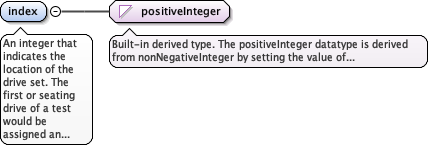
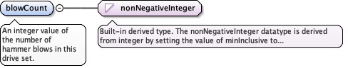

Any comment or remark associated with this specificfeature, the person or organization making the comment, and the timecomment was made.Any comment or remark associated with this specificfeature, the person or organization making the comment, and the timecomment was made.
<element maxOccurs="unbounded" minOccurs="0" name="remark" type="diggs:RemarkPropertyType"><annotation><documentation>Any comment or remark associated with this specific feature, the person or organization making the comment, and the time comment was made.Any comment or remark associated with this specific feature, the person or organization making the comment, and the time comment was made.</documentation></annotation></element>
An integer that indicates the location of the drive set.The first or seating drive of a test would be assigned an index of1, the next drive set an index of 2, etc. An index of 1 should onlybe used for the seating drive.
Diagram

Type
positiveInteger
Properties
content
simple
Source
<element name="index" type="positiveInteger"><annotation><documentation>An integer that indicates the location of the drive set. The first or seating drive of a test would be assigned an index of 1, the next drive set an index of 2, etc. An index of 1 should only be used for the seating drive.</documentation></annotation></element>
An integer value of the number of hammer blows in thisdrive set.
Diagram

Type
nonNegativeInteger
Properties
content
simple
Source
<element name="blowCount" type="nonNegativeInteger"><annotation><documentation>An integer value of the number of hammer blows in this drive set.</documentation></annotation></element>
<element name="penetration" type="eml:LengthMeasure"><annotation><documentation>The distance the sampler is driven into the soil in this drive set.</documentation></annotation></element>
<element name="delay" type="diggs:DelayEventPropertyType" minOccurs="0"><annotation><documentation>Duration of delay before increment started.</documentation></annotation></element>
Database handle for the object. It is of XML type ID, so is constrained to beunique in the XML document within which it occurs. An external identifier for the object inthe form of a URI may be constructed using standard XML and XPointer methods. This is doneby concatenating the URI for the document, a fragment separator, and the value of the idattribute.
Source
<complexType name="DriveSetType"><annotation><documentation>Base type for DriveSet object.</documentation></annotation><complexContent><extension base="diggs:AbstractComponentObjectBaseType"><sequence><element maxOccurs="unbounded" minOccurs="0" name="remark" type="diggs:RemarkPropertyType"><annotation><documentation>Any comment or remark associated with this specific feature, the person or organization making the comment, and the time comment was made.Any comment or remark associated with this specific feature, the person or organization making the comment, and the time comment was made.</documentation></annotation></element><element name="index" type="positiveInteger"><annotation><documentation>An integer that indicates the location of the drive set. The first or seating drive of a test would be assigned an index of 1, the next drive set an index of 2, etc. An index of 1 should only be used for the seating drive.</documentation></annotation></element><element name="blowCount" type="nonNegativeInteger"><annotation><documentation>An integer value of the number of hammer blows in this drive set.</documentation></annotation></element><element name="penetration" type="eml:LengthMeasure"><annotation><documentation>The distance the sampler is driven into the soil in this drive set.</documentation></annotation></element><element name="delay" type="diggs:DelayEventPropertyType" minOccurs="0"><annotation><documentation>Duration of delay before increment started.</documentation></annotation></element><element name="torque" type="eml:MomentOfForceMeasure" minOccurs="0"><annotation><documentation>Maximum torque required to rotate rods.</documentation></annotation></element></sequence></extension></complexContent></complexType>